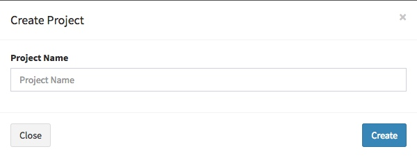
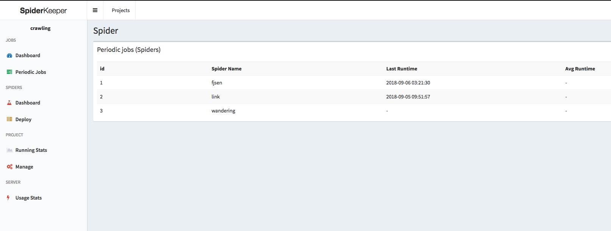

记录搭建scrapy-cluster以及管理工具scrapyd+spiderkeeper
- 基于Scrapy-cluster库的kafka-monitor可以实现分布式爬虫
- Scrapyd+Spiderkeeper实现爬虫的可视化管理
环境
| IP | Role |
|---|---|
| 168.*.*.118 | Scrapy-cluster,scrapyd,spiderkeeper |
| 168.*.*.119 | Scrapy-cluster,scrapyd,kafka,redis,zookeeper |
1 | # cat /etc/redhat-release |
Zookeeper 单机配置
- 下载并配置
1 | wget http://mirror.bit.edu.cn/apache/zookeeper/zookeeper-3.4.13/zookeeper-3.4.13.tar.gz |
- 单节点启动
1 | # zkServer.sh status |
kafka 单机配置
- 下载
1 | wget http://mirrors.hust.edu.cn/apache/kafka/2.0.0/kafka_2.12-2.0.0.tgz |
- 配置
1 | # vim config/server.properties |
- 启动
1 | nohup bin/kafka-server-start.sh config/server.properties & |
停止命令bin/kafka-server-stop.sh config/server.properties
redis 单机配置
- 安装配置
1 | yum -y install redis |
- 启动
1 | systemctl start redis.service |
scrapy-cluster 单机配置
1 | git clone https://github.com/istresearch/scrapy-cluster.git |
- 离线运行单元测试,以确保一切似乎正常
1 | ./run_offline_tests.sh |
- 修改配置
1 | vim kafka-monitor/settings.py |
- 修改以下
1 | # Redis host configuration |
- 启动监听
1 | # nohup python kafka_monitor.py run >> /root/scrapy-cluster/kafka-monitor/kafka_monitor.log 2>&1 & |
scrapyd 爬虫管理工具配置
- 安装
1 | pip install scrapyd |
- 配置
1 | sudo mkdir /etc/scrapyd |
1 | [scrapyd] |
- 启动
1 | # nohup scrapyd >> /root/scrapy-cluster/scrapyd.log 2>&1 & |
建议做Nginx反向代理
- 启动异常
1 | File "/usr/local/lib/python3.6/site-packages/scrapyd-1.2.0-py3.6.egg/scrapyd/app.py", line 2, in <module> |
- 解决：Automat降级
1 | pip install Automat==0.6.0 |
Spiderkeeper 爬虫管理界面配置
- 安装
1 | pip install SpiderKeeper |
- 启动
1 | mkdir /root/spiderkeeper/ |
使用Spiderkeeper 管理爬虫
使用scrapyd-deploy部署爬虫项目
- 修改scrapy.cfg配置
1 | vim /root/scrapy-cluster/crawler/scrapy.cfg |
1 | [settings] |
- 添加新的spider
1 | cd /root/scrapy-cluster/crawler/crawling/spider |
- 使用scrapyd-deploy部署项目
1 |
|
spiderkeeper 配置爬虫项目
- 登录Spiderkeeper创建项目
使用scrapy.cfg中配置的项目名

创建后再Spiders->Dashboard中看到所有spider

Scrapy-cluster 分布式爬虫
Scrapy Cluster需要在不同的爬虫服务器之间进行协调，以确保最大的内容吞吐量，同时控制集群服务器爬取网站的速度。
Scrapy Cluster提供了两种主要策略来控制爬虫对不同域名的攻击速度。这由爬虫的类型与IP地址确定，但他们都作用于不同的域名队列。
Scrapy-cluster分布式爬虫，分发网址是基于IP地址。在不同的机器上启动集群，不同服务器上的每个爬虫去除队列中的所有链接。
部署集群中第二个scrapy-cluster
配置一台新的服务器参照scrapy-cluster 单机配置,同时使用第一台服务器配置kafka-monitor/settings.py redis-monitor/settings.py crawling/settings.py
Current public ip 问题
由于两台服务器同时部署在相同内网，spider运行后即获取相同Current public ip，导致scrapy-cluster调度器无法根据IP分发链接
1 | 2018-09-07 16:08:29,684 [sc-crawler] DEBUG: Current public ip: b'110.90.122.1' |
参考代码/root/scrapy-cluster/crawler/crawling/distributed_scheduler.py第282行：
1 | try: |
建议修改代码，获取本机IP
1 | self.my_ip = [(s.connect(('8.8.8.8', 53)), s.getsockname()[0], s.close()) |
运行分布式爬虫
在两个scrapy-cluster中运行相同Spider
1 | execute(['scrapy', 'runspider', 'crawling/spiders/link_spider.py']) |
使用python kafka_monitor.py feed投递多个链接，使用DEBUG即可观察到链接分配情况
使用SpiderKeeper管理分布式爬虫
配置scrapyd管理集群第二个scrapy-cluster
在第二台scrapy-cluster服务器上安装配置scrapyd，参考scrapyd 爬虫管理工具配置并修改配置
1 | [settings] |
启动scrapyd后使用scrapyd-deploy工具部署两个scrapy-cluster上的爬虫项目。
使用Spiderkeeper连接多个scrapy-cluster
- 重新启动spiderkeeper，对接两个scrapy-cluster的管理工具scrapyd。
1 | nohup spiderkeeper --server=http://168.*.*.118:6800 --server=http://168.*.*.119:6800 --username=admin --password=admin --database-url=sqlite:////root/spiderkeeper/SpiderKeeper.db >> /root/scrapy-cluster/spiderkeeper.log 2>&1 & |
注意：要使用spiderkeeper管理同一个集群，爬虫项目名称必须一致，同时集群中scrapy-cluster配置相同spider任务
- 浏览器访问http://168.*.*.118:5000 启动爬虫时即可看见两个scrapy-cluster集群配置，启动同名爬虫开始scrapy-cluster分布式爬虫

- 启动分布式爬虫后状态